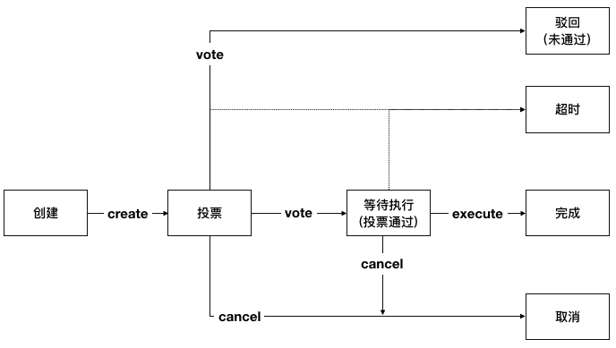

合约生命周期管理¶
合约生命周期管理¶
合约生命周期管理概述¶
合约生命周期管理包括合约的部署、升级、冻结、解冻以及销毁操作。现合约生命周期可通过两种方式进行管理，一种是不投票的方式，使用默认对方式管理合约；一种是投票对方式，需要提出申请，合约管理员审核通过后才能进行合约管理操作。
当前使用投票方式管理合约还是不投票的方式管理合约取决于配置项 proposal.contract.vote.enable 的值，当值为true时只能使用投票管理合约，当值为false时只能使用不投票的方式管理合约（默认方式）。如果采用投票的方式管理合约，需要多少赞同票才通过则通过配置项 proposal.contract.vote.threshold 的值确定。这两个配置项的修改和查询方式参考 链级配置管理。
本文后续提到的合约生命周期管理都是通过投票的方式来管理合约，本文描述的也是如何通过投票的方式来管理合约。
合约生命周期管理也是通过提案的方式来进行修改，提案的状态迁移如下：

通过提案管理合约生命周期的流程如下：（关于合约管理员的相关使用说明参考 链级角色管理，关于提案的总体介绍参考 链级权限管理）
由用户发送交易创建提案，提案中包含对合约的操作；
由合约管理员发送交易对提案进行投票，交易中携带有投票的提案编号和是否赞同提案中携带的内容；
当提案投票通过后，由提案创建者发送交易执行提案，交易中携带由执行的提案编号。
合约生命周期管理包含的操作如下：
部署合约，即将合约部署到区块链上以供使用。返回值为部署是否成功以及相应的合约地址
升级合约，即对已有的合约进行升级
维护合约，即对已有的合约进行冻结、解冻和销毁操作
litesdk接口说明¶
litesdk提供了 ProposalBuilder 构造器用于构造提案的操作，在 ProposalBuilder 中提供了 createForContract 、 vote 、 cancel 和 execute 方法分别用于创建合约管理类提案、提案投票、取消提案和执行提案的提案操作，其定义如下:
public static class ProposalBuilder extends BuiltinOperationBuilder {
/**
* create creat ProposalOperation for contract to create contract proposal.
*
* @param opts contract operations
* @return {@link ProposalBuilder}
*/
public ProposalBuilder createForContract(ContractOperation... opts);
/**
* create vote ProposalOperation to vote proposal.
*
* @param proposalID proposal id
* @param vote vote value, true means agree; false means refuse
* @return {@link ProposalBuilder}
*/
public ProposalBuilder vote(int proposalID, boolean vote);
/**
* create cancel ProposalOperation to cancel proposal.
*
* @param proposalID proposal id
* @return {@link ProposalBuilder}
*/
public ProposalBuilder cancel(int proposalID);
/**
* create execute ProposalOperation to cancel proposal.
*
* @param proposalID proposal id
* @return {@link ProposalBuilder}
*/
public ProposalBuilder execute(int proposalID);
}
在创建合约管理类提案操作时，根据提案内容中需要对合约的操作不同，接收的合约管理类操作不同。litesdk为合约管理类操作 ContractOperation 提供了构造器 ContractBuilder，里面提供了 deploy 、 upgrade 、 upgradeByName 、 maintain 、 maintainByName 以及 build 方法，其定义如下:
public static class ContractBuilder {
/**
* create ContractOperation to deploy contract.
*
* @param source contract source
* @param bin contract bin
* @param vmType vm type
* @param compileOpt contract compile option(the compile option to compile source to bin)
* @return {@link ContractBuilder}
*/
public ContractBuilder deploy(String source, String bin, VMType vmType, Map<String, String> compileOpt);
/**
* create ContractOperation to upgrade contract by contract address.
*
* @param source contract source
* @param bin contract bin
* @param vmType vm type
* @param addr contract address
* @param compileOpt contract compile option(the compile option to compile source to bin)
* @return {@link ContractBuilder}
*/
public ContractBuilder upgrade(String source, String bin, VMType vmType, String addr, Map<String, String> compileOpt);
/**
* create ContractOperation to upgrade contract by contract name.
*
* @param source contract source
* @param bin contract bin
* @param vmType vm type
* @param name contract name
* @param compileOpt contract compile option(the compile option to compile source to bin)
* @return {@link ContractBuilder}
*/
public ContractBuilder upgradeByName(String source, String bin, VMType vmType, String name, Map<String, String> compileOpt);
/**
* create ContractOperation to maintain contract by contract address.
*
* @param vmType vm type
* @param addr contract address
* @param opCode operation code, 2 means freeze, 3 means unfreeze, 5 means destroy
* @return {@link ContractBuilder}
*/
public ContractBuilder maintain(VMType vmType, String addr, int opCode);
/**
* create ContractOperation to maintain contract by contract name.
*
* @param vmType vm type
* @param name contract address
* @param opCode operation code, 2 means freeze, 3 means unfreeze, 5 means destroy
* @return {@link ContractBuilder}
*/
public ContractBuilder maintainByName(VMType vmType, String name, int opCode);
/**
* return build ContractOperation.
*
* @return {@link ContractOperation}
*/
public ContractOperation build();
}
合约生命周期管理的操作构造好后，用ProposalBuild构造器构造提案相关的操作，创建好之后，使用 BVMBuilder 提供的 invoke 方法构造bvm的交易体，使用 build 方法构造出交易 transaction ，并为交易设置 txVersion 并使用 sign 方法签名，得到最终可以发送执行的交易体。
litesdk使用示例¶
使用litesdk部署合约、升级合约、冻结合约，其代码如下:
public void testContractOperation() throws RequestException, IOException {
InputStream inputStream1 = Thread.currentThread().getContextClassLoader().getResourceAsStream("solidity/sol2/TestContract_sol_TypeTestContract.bin");
String bin = FileUtil.readFile(inputStream1);
InputStream inputStream2 = Thread.currentThread().getContextClassLoader().getResourceAsStream("solidity/sol2/TestContract_sol_TypeTestContract.sol");
String source = FileUtil.readFile(inputStream2);
// deploy
String address = completeManageContractByVote(new ProposalOperation.ProposalBuilder().createForContract(
new ContractOperation.ContractBuilder().deploy(source, bin, VMType.EVM, null).build()
).build());
// upgrade and freeze
completeManageContractByVote(new ProposalOperation.ProposalBuilder().createForContract(
new ContractOperation.ContractBuilder().upgrade(source, bin, VMType.EVM, address, null).build(),
new ContractOperation.ContractBuilder().maintain(VMType.EVM, address, 2).build()
).build());
}
public String completeManageContractByVote(BuiltinOperation opt) throws RequestException {
Account acc = accountService.fromAccountJson(accountJsons[0]);
Transaction transaction = new Transaction.
BVMBuilder(acc.getAddress()).
invoke(opt).
build();
transaction.sign(acc);
ReceiptResponse receiptResponse = contractService.manageContractByVote(transaction).send().polling();
Result result = Decoder.decodeBVM(receiptResponse.getRet());
System.out.println(result);
Assert.assertTrue(result.isSuccess());
Request<ProposalResponse> proposal = configService.getProposal();
ProposalResponse proposalResponse = proposal.send();
ProposalResponse.Proposal prop = proposalResponse.getProposal();
// vote
for (int i = 1; i < 6; i++) {
invokeBVMContract(new ProposalOperation.ProposalBuilder().vote(prop.getId(), true).build(), accountService.fromAccountJson(accountJsons[i]));
}
// execute
result = invokeBVMContract(new ProposalOperation.ProposalBuilder().execute(prop.getId()).build(), accountService.fromAccountJson(accountJsons[0]));
Assert.assertEquals("", result.getErr());
System.out.println(result.getRet());
List<OperationResult> resultList = Decoder.decodeBVMResult(result.getRet());
for (OperationResult or : resultList) {
Assert.assertEquals(SuccessCode.getCode(), or.getCode());
Assert.assertEquals(SuccessCode.getCode(), or.getCode());
}
if (resultList.size() > 0) {
return resultList.get(0).getMsg();
}
return null;
}
public Result invokeBVMContract(BuiltinOperation opt, Account acc) throws RequestException {
Transaction transaction = new Transaction.
BVMBuilder(acc.getAddress()).
invoke(opt).
build();
transaction.sign(acc);
ReceiptResponse receiptResponse = contractService.invoke(transaction).send().polling();
Result result = Decoder.decodeBVM(receiptResponse.getRet());
System.out.println(result);
return result;
}